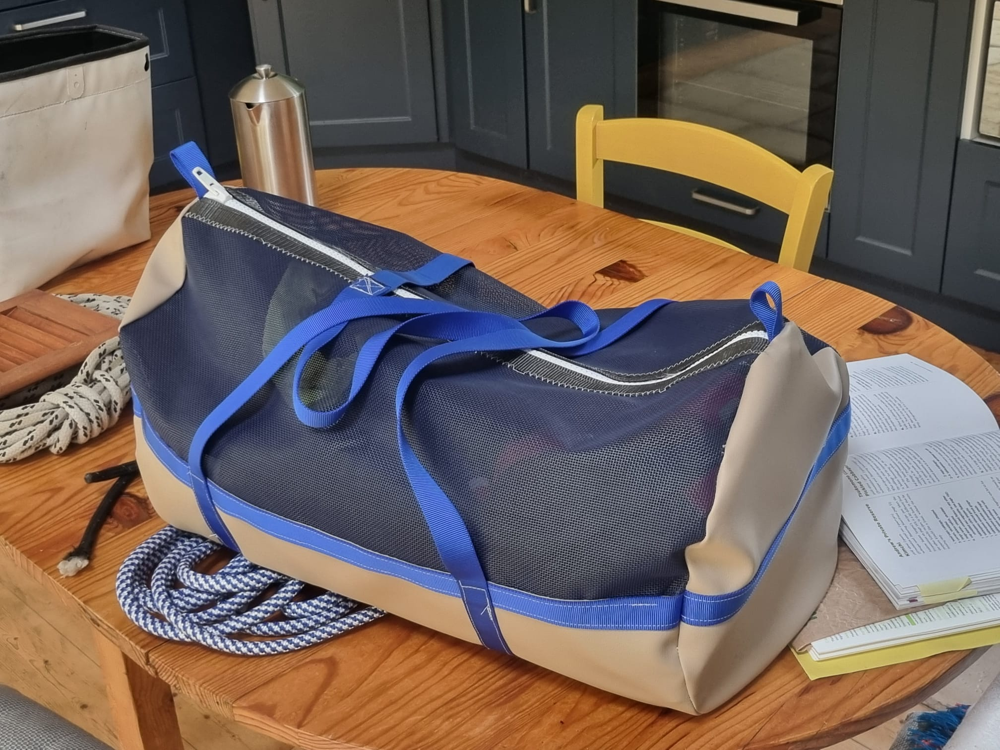
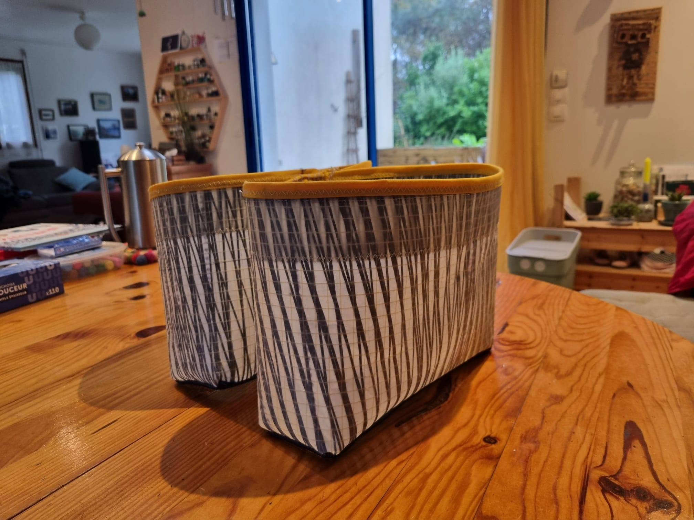
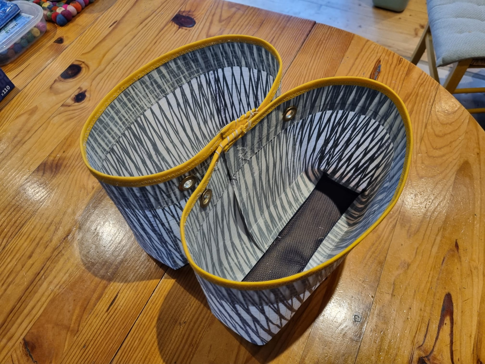
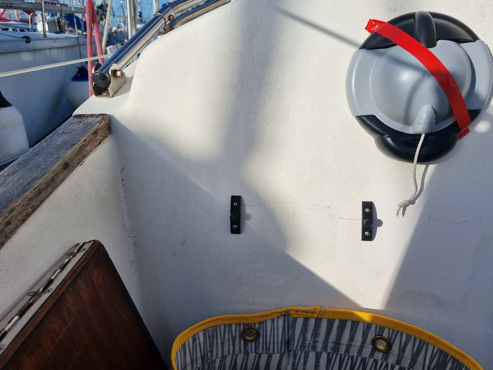
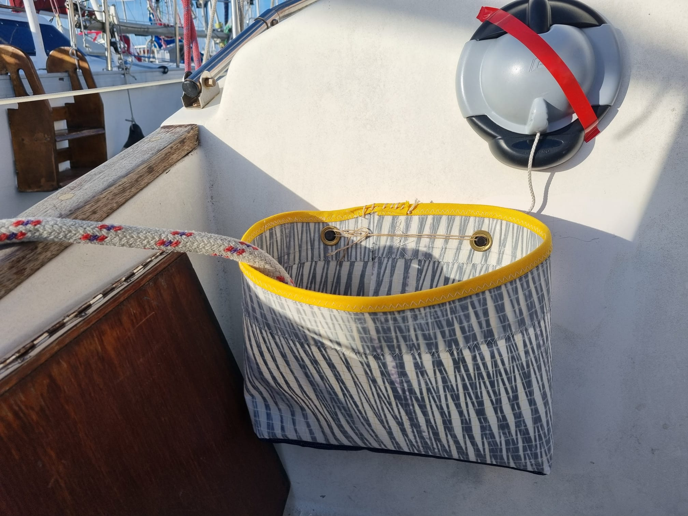
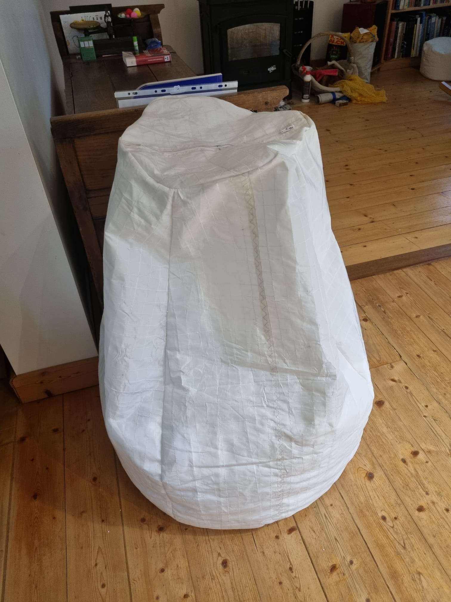
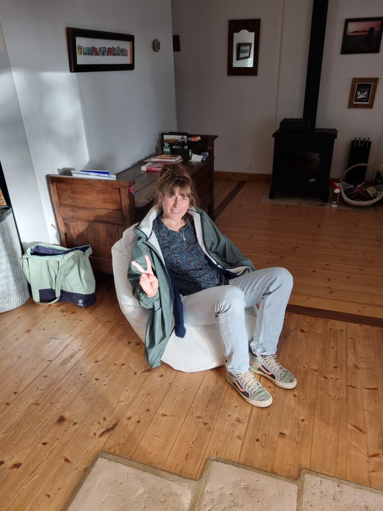
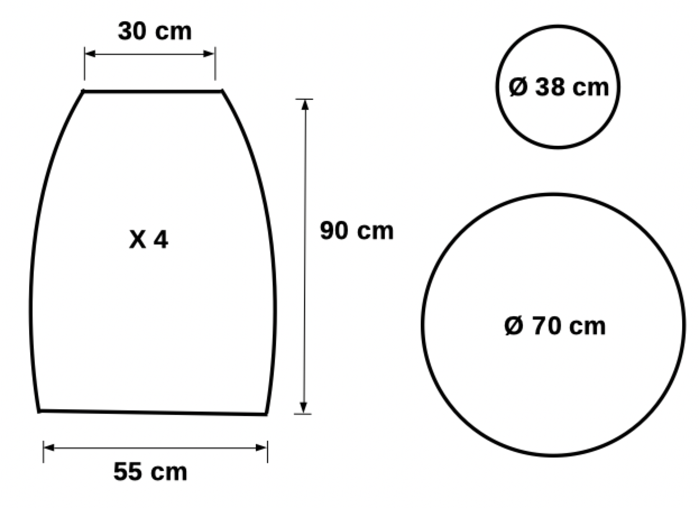
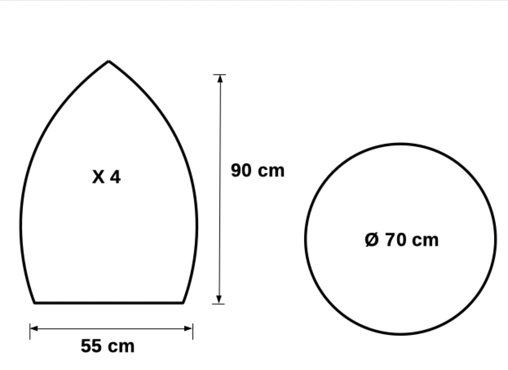

Sac marin
Pour transporter les affaires de mer (cirés et bottes).
Fabriqué avec des chutes de simili-cuir (utilisé pour des coussins) et de Batyiline, pour laisser le contenu du sac respirer et sécher.
Dimensions: 60 cm de long, 35 cm de diamètre.

Bailles à bouts
Des chutes de kevlar-carbone, avec le fond en Batyline. C'est du costaud !




Dimensions :
Fond : 10cm x 30cm
Hauteur : 20cm
Les pontets de fixation, imprimés en 3D.
À voir ici.
Poufs, bean-bags,...
Dimesions :
Hauteur 90cm
Diamètre bas : 70cm
Diamètre haut : 38cm
Pour s'asseoir confortablement sur le pont, ou dans le cockpit.
Rempli de billes de polystyrène expansé (4 sacs de 50 litres de Myrbilles, de chez Myrtille).



À essayer la prochaine fois :

avec une poignée sur le dessus pour le transport.